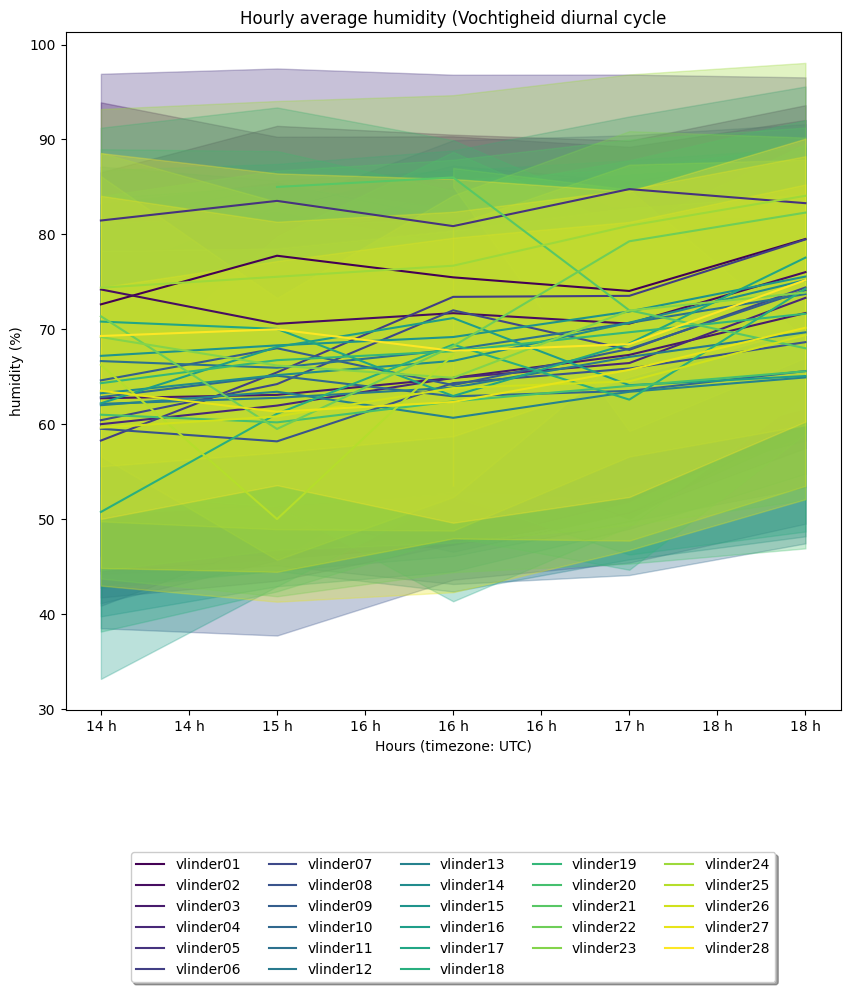

Demo example: Analysis#
This example is the continuation of the previous example: filling gaps and missing observations. This example serves as an introduction to the Analysis module.
[1]:
import metobs_toolkit
your_dataset = metobs_toolkit.Dataset()
your_dataset.update_settings(
input_data_file=metobs_toolkit.demo_datafile, # path to the data file
input_metadata_file=metobs_toolkit.demo_metadatafile,
template_file=metobs_toolkit.demo_template,
)
#Import the data
your_dataset.import_data_from_file()
#Coarsen to 15-minutes frequencies
your_dataset.coarsen_time_resolution(freq='15T')
#Apply default quality control
your_dataset.apply_quality_control(obstype='temp') #we use the default settings in this example
#Interpret the outliers as missing observations and gaps.
your_dataset.convert_outliers_to_gaps()
#Fill gaps by interpolation
your_dataset.interpolate_gaps(obstype='temp', max_consec_fill=20)
Warning! The current gaps will be removed and new gaps are formed!
Warning! The current gaps are defined at a resolution different from the assumed import resolution!
Warning! Cannot fill temp-gap of vlinder05 for 2022-09-01 00:00:00+00:00 --> 2022-09-01 05:45:00+00:00, duration: 0 days 05:45:00, because leading record is not valid.
Warning! Cannot fill temp-gap of vlinder05 for 2022-09-13 20:00:00+00:00 --> 2022-09-15 23:45:00+00:00, duration: 2 days 03:45:00, because trailing record is not valid.
[1]:
| fill | fill_method | msg | gap_ID | ||
|---|---|---|---|---|---|
| name | datetime | ||||
| vlinder01 | 2022-09-01 02:30:00+00:00 | NaN | leading | ok | vlinder01;2022-09-01 02:45:00+00:00;2022-09-01... |
| 2022-09-01 02:45:00+00:00 | 16.80 | interpolation | ok | vlinder01;2022-09-01 02:45:00+00:00;2022-09-01... | |
| 2022-09-01 03:00:00+00:00 | NaN | trailing | ok | vlinder01;2022-09-01 02:45:00+00:00;2022-09-01... | |
| 2022-09-01 05:30:00+00:00 | NaN | leading | ok | vlinder01;2022-09-01 05:45:00+00:00;2022-09-01... | |
| 2022-09-01 05:45:00+00:00 | 15.15 | interpolation | ok | vlinder01;2022-09-01 05:45:00+00:00;2022-09-01... | |
| ... | ... | ... | ... | ... | ... |
| vlinder28 | 2022-09-15 07:15:00+00:00 | NaN | interpolation | Permitted_by_max_consecutive_fill | vlinder28;2022-09-15 01:45:00+00:00;2022-09-15... |
| 2022-09-15 07:30:00+00:00 | NaN | interpolation | Permitted_by_max_consecutive_fill | vlinder28;2022-09-15 01:45:00+00:00;2022-09-15... | |
| 2022-09-15 07:45:00+00:00 | NaN | interpolation | Permitted_by_max_consecutive_fill | vlinder28;2022-09-15 01:45:00+00:00;2022-09-15... | |
| 2022-09-15 08:00:00+00:00 | NaN | interpolation | Permitted_by_max_consecutive_fill | vlinder28;2022-09-15 01:45:00+00:00;2022-09-15... | |
| 2022-09-15 08:15:00+00:00 | NaN | trailing | ok | vlinder28;2022-09-15 01:45:00+00:00;2022-09-15... |
7991 rows × 4 columns
Creating an Analysis#
The built-in analysis functionality is centered around the Analysis class. First, create an Analysis object from a Dataset.
[2]:
your_dataset.convert_filled_to_obs() #convert fillded values to observations
analysis = metobs_toolkit.Analysis(your_dataset)
analysis
[2]:
Analysis instance containing:
*28 stations
*['humidity', 'precip', 'precip_sum', 'pressure', 'pressure_at_sea_level', 'temp', 'wind_direction', 'wind_gust', 'wind_speed', 'radiation_temp'] observation types
*364320 observation records
*0 records labeled as outliers
*125 gaps
*records range: 2022-09-01 00:00:00+00:00 --> 2022-09-15 23:45:00+00:00 (total duration: 14 days 23:45:00)
*time zone of the records: UTC
*Coordinates are available for all stations.
Analysis methods#
An overview of the available analysis methods can be seen in the documentation of the Analysis class. The relevant methods depend on your data and your interests. As an example, a demonstration of the filter and diurnal cycle of the demo data.
Filtering data#
It is common to filter your data according to specific meteorological phenomena or periods in time. To do this you can use the get_full_dataframe() and set_data() methods.
[3]:
#Goal: filter to non-windy afternoons in the Autumn.
#1. Get a pandas dataframe to filter
to_filter = analysis.get_full_dataframe()
to_filter
#2. Use pandas methods to filter the dataframe
to_filter = to_filter.set_index(['name', 'datetime', 'obstype']) #set meaningful index
autumn_afternoon_data = to_filter[(to_filter['season'] == 'autumn') &
(to_filter['hour']>=14) &
(to_filter['hour']<=18)]
autumn_afternoon_data = autumn_afternoon_data.unstack(level='obstype') #create columns for each obstype (long to wide transformation)
#filter per station, for non-windy conditions
non_windy_autumn_afternoons_data = autumn_afternoon_data[(autumn_afternoon_data[('value', 'wind_speed')] <= 2.5)]
#unstack the obstype columns (wide to long transformation)
non_windy_autumn_afternoons_data = non_windy_autumn_afternoons_data.stack()
non_windy_autumn_afternoons_data
[3]:
| value | minute | hour | month | year | day_of_year | week_of_year | season | network | lat | lon | call_name | location | geometry | lcz | dt_start | dt_end | assumed_import_frequency | dataset_resolution | |||
|---|---|---|---|---|---|---|---|---|---|---|---|---|---|---|---|---|---|---|---|---|---|
| name | datetime | obstype | |||||||||||||||||||
| vlinder01 | 2022-09-01 18:00:00+00:00 | humidity | 47.0 | 0.0 | 18.0 | September | 2022.0 | 244.0 | 35 | autumn | Vlinder | 50.980438 | 3.815763 | Proefhoeve | Melle | POINT (3.815763 50.980438) | NaN | 2022-09-01 00:00:00+00:00 | 2022-09-15 23:55:00+00:00 | 0 days 00:05:00 | 0 days 00:15:00 |
| precip | 0.0 | 0.0 | 18.0 | September | 2022.0 | 244.0 | 35 | autumn | Vlinder | 50.980438 | 3.815763 | Proefhoeve | Melle | POINT (3.815763 50.980438) | NaN | 2022-09-01 00:00:00+00:00 | 2022-09-15 23:55:00+00:00 | 0 days 00:05:00 | 0 days 00:15:00 | ||
| precip_sum | 0.0 | 0.0 | 18.0 | September | 2022.0 | 244.0 | 35 | autumn | Vlinder | 50.980438 | 3.815763 | Proefhoeve | Melle | POINT (3.815763 50.980438) | NaN | 2022-09-01 00:00:00+00:00 | 2022-09-15 23:55:00+00:00 | 0 days 00:05:00 | 0 days 00:15:00 | ||
| pressure | 101453.0 | 0.0 | 18.0 | September | 2022.0 | 244.0 | 35 | autumn | Vlinder | 50.980438 | 3.815763 | Proefhoeve | Melle | POINT (3.815763 50.980438) | NaN | 2022-09-01 00:00:00+00:00 | 2022-09-15 23:55:00+00:00 | 0 days 00:05:00 | 0 days 00:15:00 | ||
| pressure_at_sea_level | 101717.0 | 0.0 | 18.0 | September | 2022.0 | 244.0 | 35 | autumn | Vlinder | 50.980438 | 3.815763 | Proefhoeve | Melle | POINT (3.815763 50.980438) | NaN | 2022-09-01 00:00:00+00:00 | 2022-09-15 23:55:00+00:00 | 0 days 00:05:00 | 0 days 00:15:00 | ||
| ... | ... | ... | ... | ... | ... | ... | ... | ... | ... | ... | ... | ... | ... | ... | ... | ... | ... | ... | ... | ... | ... |
| vlinder28 | 2022-09-15 18:45:00+00:00 | pressure_at_sea_level | 101266.0 | 45.0 | 18.0 | September | 2022.0 | 258.0 | 37 | autumn | Vlinder | 51.035293 | 3.769741 | Gentbrugse Meersen | Gent | POINT (3.769741 51.035293) | NaN | 2022-09-01 00:00:00+00:00 | 2022-09-15 23:55:00+00:00 | 0 days 00:05:00 | 0 days 00:15:00 |
| temp | 15.7 | 45.0 | 18.0 | September | 2022.0 | 258.0 | 37 | autumn | Vlinder | 51.035293 | 3.769741 | Gentbrugse Meersen | Gent | POINT (3.769741 51.035293) | NaN | 2022-09-01 00:00:00+00:00 | 2022-09-15 23:55:00+00:00 | 0 days 00:05:00 | 0 days 00:15:00 | ||
| wind_direction | 15.0 | 45.0 | 18.0 | September | 2022.0 | 258.0 | 37 | autumn | Vlinder | 51.035293 | 3.769741 | Gentbrugse Meersen | Gent | POINT (3.769741 51.035293) | NaN | 2022-09-01 00:00:00+00:00 | 2022-09-15 23:55:00+00:00 | 0 days 00:05:00 | 0 days 00:15:00 | ||
| wind_gust | 8.1 | 45.0 | 18.0 | September | 2022.0 | 258.0 | 37 | autumn | Vlinder | 51.035293 | 3.769741 | Gentbrugse Meersen | Gent | POINT (3.769741 51.035293) | NaN | 2022-09-01 00:00:00+00:00 | 2022-09-15 23:55:00+00:00 | 0 days 00:05:00 | 0 days 00:15:00 | ||
| wind_speed | 0.8 | 45.0 | 18.0 | September | 2022.0 | 258.0 | 37 | autumn | Vlinder | 51.035293 | 3.769741 | Gentbrugse Meersen | Gent | POINT (3.769741 51.035293) | NaN | 2022-09-01 00:00:00+00:00 | 2022-09-15 23:55:00+00:00 | 0 days 00:05:00 | 0 days 00:15:00 |
47817 rows × 19 columns
[4]:
#3. Update the Analysis data to these filtered data
analysis.set_data(df = non_windy_autumn_afternoons_data)
analysis
[4]:
Analysis instance containing:
*28 stations
*['humidity', 'precip', 'precip_sum', 'pressure', 'pressure_at_sea_level', 'temp', 'wind_direction', 'wind_gust', 'wind_speed', 'radiation_temp'] observation types
*47817 observation records
*0 records labeled as outliers
*125 gaps
*records range: 2022-09-01 14:00:00+00:00 --> 2022-09-15 18:45:00+00:00 (total duration: 14 days 04:45:00)
*time zone of the records: UTC
*Coordinates are available for all stations.
Diurnal cycle#
To make a diurnal cycle plot of your Analysis use the get_diurnal_statistics() method:
[5]:
dirunal_statistics = analysis.get_diurnal_statistics(colorby='name',
obstype='humidity',
plot=True,
errorbands=True,
)
#Note that in this example statistics are computed for a short period and only for the non-windy autumn afternoons.

Analysis exercise#
For a more detailed reference you can use this Analysis exercise, which was created in the context of the COST FAIRNESS summer school 2023 in Ghent.